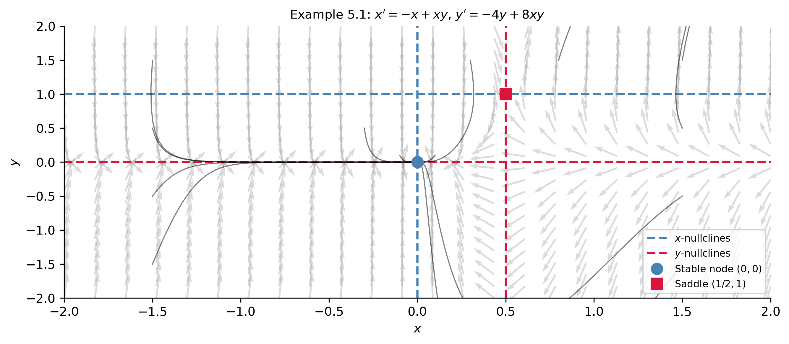
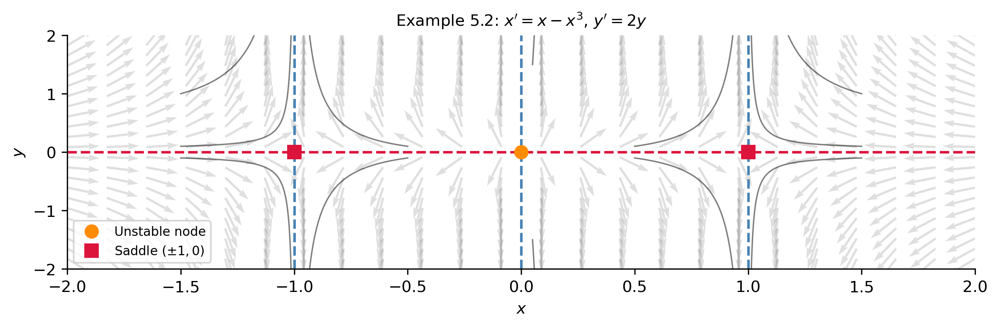
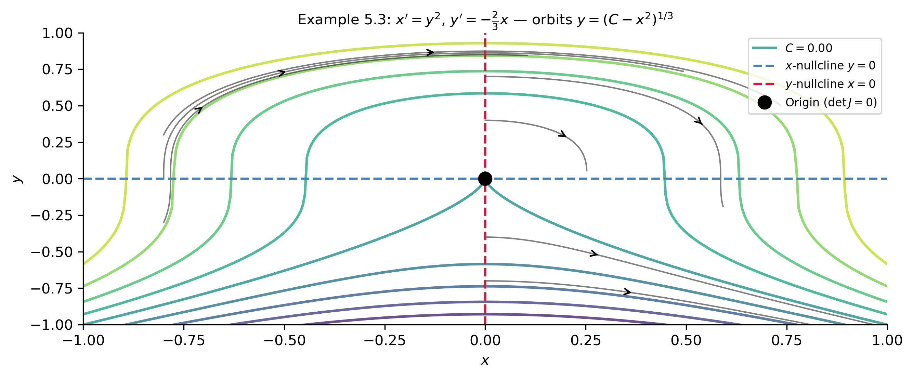

Linearization and Phase Plane Analysis of Nonlinear Systems
MATH 341 — Notes 12
Goals
What We Will Cover
Critical points of nonlinear systems — definition and location via nullclines
Jacobian matrix — derived from the Taylor expansion; the linearized system
Behavior near a critical point — the nonlinear system inherits stability from its linearization (with one exception)
Asymptotic stability criterion: \(\text{tr}\,J < 0\) and \(\det J > 0\)
Nullclines and direction fields — tools for the global phase diagram
Seven-step procedure for sketching phase diagrams
Three worked examples — two critical points, three critical points, and a degenerate case where linearization fails
Note
Section 5.1 of Logan (2015).
Tip
New vocabulary: critical point, Jacobian matrix, linearization, perturbation, nullcline, degenerate critical point.
From Scalar to Planar
Linearization for a Scalar Equation (Review)
For \(x' = f(x)\): equilibrium \(x_e\) satisfies \(f(x_e) = 0\).
Perturb: \(x(t) = x_e + u(t)\), expand by Taylor’s theorem:
\[u' = f(x_e) + f'(x_e)\,u + \tfrac{1}{2}f''(x_e)\,u^2 + \cdots\]
Since \(f(x_e)=0\) and higher terms are small:
\[u' \approx f'(x_e)\,u \implies u(t) = u(0)\,e^{f'(x_e)t}.\]
. . .
| Sign of \(f'(x_e)\) | Behavior | Stability |
|---|---|---|
| \(< 0\) | Perturbations decay | Asymptotically stable |
| \(> 0\) | Perturbations grow | Unstable |
| \(= 0\) | No information | Must go to higher order |
. . .
We now carry out the same program for two-dimensional nonlinear systems.
Critical Points of Nonlinear Systems
Consider the nonlinear autonomous system
\[x' = f(x,y), \qquad y' = g(x,y). \tag{5.1–5.2}\]
ImportantDefinition: Critical Point
A critical point (equilibrium) \((x_e, y_e)\) satisfies \[f(x_e, y_e) = 0 \quad\text{and}\quad g(x_e, y_e) = 0\] simultaneously. Critical points represent constant solutions.
. . .
Tip
How to find them: the set \(f=0\) defines the \(x\)-nullclines; the set \(g=0\) defines the \(y\)-nullclines. Critical points are intersections of \(x\)-nullclines with \(y\)-nullclines.
The Jacobian Matrix
Perturb: \(x = x_e + u\), \(y = y_e + v\), where \(u,v\) are small. Taylor-expand the right sides about \((x_e, y_e)\):
\[u' = \underbrace{f(x_e,y_e)}_{=\,0} + f_x u + f_y v + \cdots \approx f_x u + f_y v,\] \[v' = \underbrace{g(x_e,y_e)}_{=\,0} + g_x u + g_y v + \cdots \approx g_x u + g_y v.\]
In matrix form: \(\mathbf{z}' = J\,\mathbf{z}\), where
ImportantDefinition: Jacobian Matrix
\[J(x_e,y_e) = \begin{pmatrix} f_x(x_e,y_e) & f_y(x_e,y_e) \\ g_x(x_e,y_e) & g_y(x_e,y_e) \end{pmatrix}. \tag{5.4}\]
The linearized system \(\mathbf{z}' = J\mathbf{z}\) is a linear constant-coefficient system — everything from Chapter 4 applies.
Behavior Near a Critical Point
ImportantKey Results (assuming \(\det J \neq 0\))
Asymptotically stable: If \(J\) has eigenvalues with negative real parts, then \((x_e,y_e)\) is asymptotically stable for the nonlinear system. Equivalent conditions: \[\text{tr}\,J(x_e,y_e) < 0 \quad\text{and}\quad \det J(x_e,y_e) > 0. \tag{5.5}\]
Unstable: If \(J\) has an eigenvalue with positive real part, then \((x_e,y_e)\) is unstable.
Exceptional case: If \(J\) has purely imaginary eigenvalues (center for the linearization), the nonlinear system may be a center or a spiral — linearization is inconclusive.
Borderline case: Equal eigenvalues preserve stability/instability but the orbital shape may differ (e.g., node → spiral).
. . .
Tip
In practice: compute \(\text{tr}\,J\) and \(\det J\) at each equilibrium. This determines stability without solving the characteristic equation.
Nullclines and the Phase Diagram
ImportantNullclines
- \(x\)-nullclines (\(f(x,y)=0\)): vector field is vertical (straight up or down)
- \(y\)-nullclines (\(g(x,y)=0\)): vector field is horizontal (straight left or right)
- Intersections of \(x\)- and \(y\)-nullclines are critical points
. . .
Seven-Step Procedure
- Find critical points; classify by \(J\) (eigenvalues, or tr/det test)
- Draw \(x\)- and \(y\)-nullclines
- Determine sign of \(f\) and \(g\) in each region: N/S/E/W → NE/NW/SE/SW
- Sketch representative orbits
- Find separatrix directions from eigenvectors of \(J\) at saddles/nodes
- If possible, divide and integrate to find orbits \(y=y(x)\)
- Use software for accurate phase portrait
Worked Examples
Example 5.1 — Setup
System:
\[x' = -x + xy, \qquad y' = -4y + 8xy.\]
. . .
Critical points. Factor each equation:
\[x(-1+y)=0 \implies x=0 \text{ or } y=1.\] \[4y(-1+2x)=0 \implies y=0 \text{ or } x=\tfrac{1}{2}.\]
. . .
- Case \(x=0\): second equation gives \(y=0\). \(\implies (0,0)\).
- Case \(y=1\): second equation gives \(x=\tfrac{1}{2}\). \(\implies (\tfrac{1}{2},1)\).
. . .
Jacobian:
\[J(x,y) = \begin{pmatrix}-1+y & x \\ 8y & -4+8x\end{pmatrix}.\]
Example 5.1 — Classification
At \((0,0)\):
\[J(0,0) = \begin{pmatrix}-1 & 0 \\ 0 & -4\end{pmatrix}, \quad \lambda = -1,\,-4.\]
\(\text{tr}\,J = -5 < 0\), \(\det J = 4 > 0\) \(\implies\) asymptotically stable node. \(\checkmark\)
. . .
At \((\tfrac{1}{2},1)\):
\[J\!\left(\tfrac{1}{2},1\right) = \begin{pmatrix}0 & \tfrac{1}{2} \\ 8 & 0\end{pmatrix}, \quad \lambda^2-4=0, \quad \lambda=\pm 2.\]
\(\det J = -4 < 0\) \(\implies\) unstable saddle point. \(\checkmark\)
. . .
Nullclines. \(x\)-nullclines: \(x=0\) and \(y=1\). \(y\)-nullclines: \(y=0\) and \(x=\tfrac{1}{2}\).
Example 5.1 — Phase Portrait
Example 5.2 — Three Critical Points
System: \(x' = x - x^3\), \(y' = 2y\). Equilibria: \((0,0)\), \((\pm 1, 0)\).
\[J(x,y) = \begin{pmatrix}1-3x^2 & 0 \\ 0 & 2\end{pmatrix}.\]
| Point | \(J\) | Eigenvalues | Type |
|---|---|---|---|
| \((0,0)\) | \(\begin{pmatrix}1&0\\0&2\end{pmatrix}\) | \(1,\,2\) | Unstable node |
| \((\pm 1,0)\) | \(\begin{pmatrix}-2&0\\0&2\end{pmatrix}\) | \(-2,\,2\) | Saddle |

When Linearization Fails
Example 5.3 — Degenerate Critical Point
System: \(x' = y^2\), \(y' = -\tfrac{2}{3}x\). Only critical point: \((0,0)\).
\[J(0,0) = \begin{pmatrix}0 & 0 \\ -\tfrac{2}{3} & 0\end{pmatrix}, \quad \det J = 0, \quad \lambda = 0,\,0.\]
. . .
Important\(\det J = 0\): Linearization Does Not Apply
When both eigenvalues are zero, the standard linear classification fails. We must use a different strategy.
. . .
Alternative — Divide and Integrate:
\[\frac{dy}{dx} = \frac{-\tfrac{2}{3}x}{y^2} \implies 3y^2\,dy = -2x\,dx \implies y^3 = -x^2 + C.\]
Orbits are the curves \(y = (C - x^2)^{1/3}\). Since \(x' = y^2 \ge 0\), all orbits move to the right.
Example 5.3 — Phase Portrait

Note
All orbits move to the right since \(x' = y^2 \ge 0\). The critical point is not of standard type — unusual orbital behavior is common for nonlinear systems.
Summary
Key Takeaways
A critical point \((x_e, y_e)\) satisfies \(f(x_e,y_e)=0\) and \(g(x_e,y_e)=0\). Critical points are intersections of \(x\)-nullclines with \(y\)-nullclines.
The Jacobian matrix \(J(x_e,y_e) = \begin{pmatrix}f_x & f_y \\ g_x & g_y\end{pmatrix}\) evaluated at the equilibrium gives the coefficient matrix of the linearized perturbation equations \(\mathbf{z}' = J\mathbf{z}\).
The nonlinear system inherits stability from its linearization in all non-exceptional cases. The key test is condition (5.5): \(\text{tr}\,J < 0\) and \(\det J > 0\) \(\implies\) asymptotically stable.
Exception (center): If \(J\) has purely imaginary eigenvalues, the nonlinear system may be a center or a spiral — linearization cannot distinguish these. Higher-order analysis or a Lyapunov function is required.
Degenerate case (\(\det J = 0\)): Linearization fails. Divide and separate variables to find orbits \(y=y(x)\) when possible, or use numerical methods.
For the phase diagram: find nullclines, classify all critical points via \(J\), determine direction field in each region, and sketch representative orbits. Eigenvectors of \(J\) give the directions of separatrices at saddle points.
. . .
Tip
Looking Ahead: §5.2 applies linearization to nonlinear mechanics: Newton’s law \(mx''=F(x,x')\) written as \(x'=y\), \(y'=F(x,y)/m\). The critical points correspond to equilibrium positions, and their type describes whether the motion is oscillatory or monotone.
Note
Next: Nonlinear Mechanics — Logan §5.2.
References
Logan, J David. 2015. A First Course in Differential Equations, Third Edition.